Adding Data From Different Sources - INCOMPLETE
Import From ESRI Shapefile (*.shp)
The easiest way to import data into our workspace is using the Data Source Manager 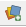.
You can find it on the toolbar below the new project button, or open it using the Ctrl+L keyboard shortcut.
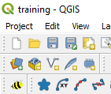
Once the window opens you have a selection of data sources, to load an ESRI Shapefile or GeoJson or any other vector file type,
just select the Vector data type, the file source type and select your file.
Click Add, and you can close the window, and see your layer in the workspace.
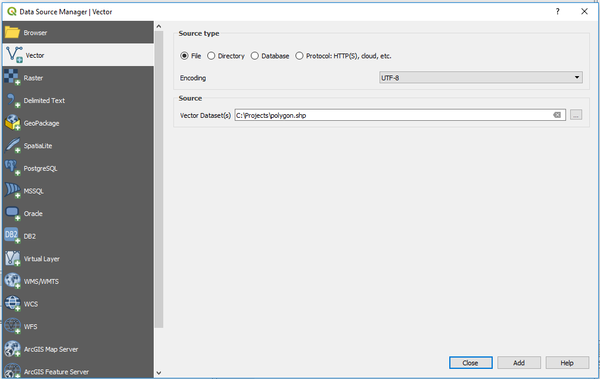
Another Option is just navigating to the folder using the browser window and dragging the layers from there
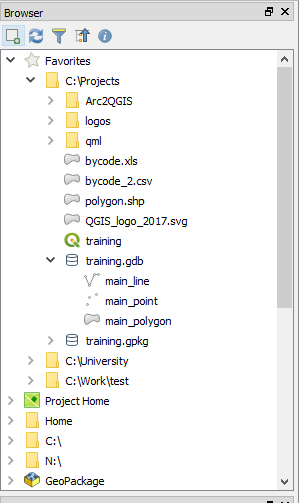
And thats it, Simple and easy to use, and now you know how to do that in Open Source.
Go back to the top
Import From ESRI FileGeoDataBase (*.gdb)
You can read data from an ESRI FileGeoDataBase with the base version of QGIS.
however, if you want to be able to edit and rewrite the layers into the database, you will need the gdal-filegdb driver.
you can install it using the OSGEO4W installer.
just select to install it like so:
 The easiest way to import data into our workspace is using the Data Source Manager .
You can find it on the toolbar below the new project button, or open it using the Ctrl+L keyboard shortcut.
Once the window opens you have a selection of data sources, to load an ESRI Shapefile or GeoJson or any other vector file type,
just select the Vector data type, the folder source type and select the .gdb folder.
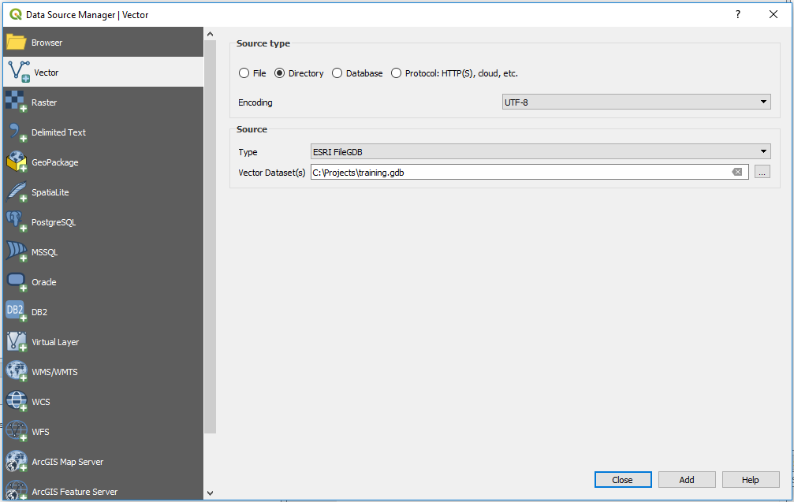
Once you click the Add button, a second window will open and ask which of the FileGeoDataBase layers you want to import.
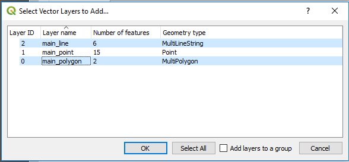
You can now the close the Data Source Manager window, and see your layers in the workspace.
Another Option is just navigating to the folder using the browser window and dragging the layers from there
And thats it, Simple and easy to use, and now you know how to do that in Open Source.
Go back to the top
The easiest way to import data into our workspace is using the Data Source Manager .
You can find it on the toolbar below the new project button, or open it using the Ctrl+L keyboard shortcut.
Once the window opens you have a selection of data sources, to load an ESRI Shapefile or GeoJson or any other vector file type,
just select the Vector data type, the folder source type and select the .gdb folder.
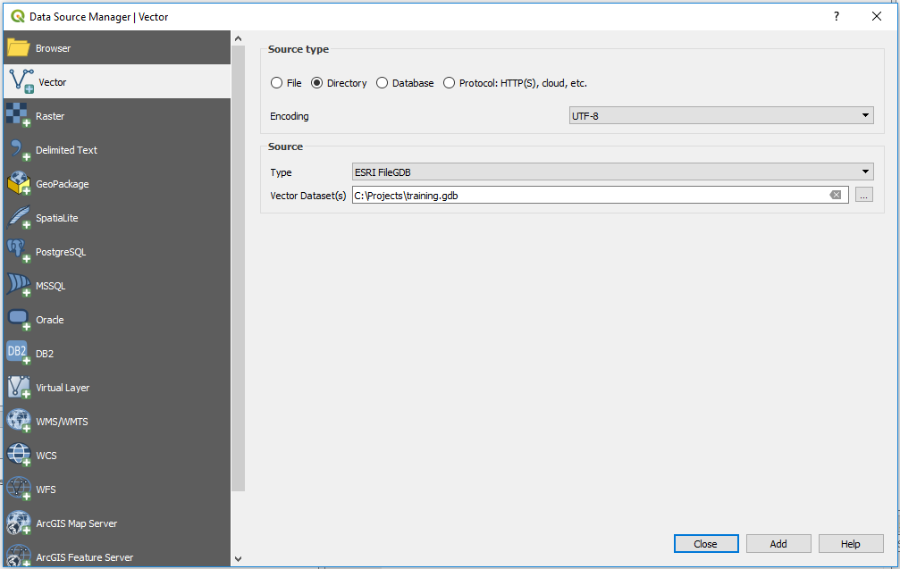
Once you click the Add button, a second window will open and ask which of the FileGeoDataBase layers you want to import.
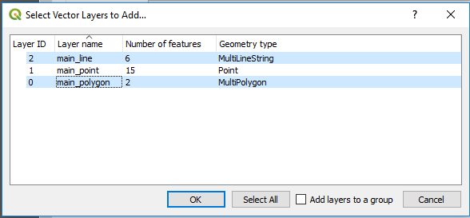
You can now the close the Data Source Manager window, and see your layers in the workspace.
Another Option is just navigating to the folder using the browser window and dragging the layers from there
And thats it, Simple and easy to use, and now you know how to do that in Open Source.
Go back to the top
Import From a GeoPackage (*.gpkg)
Importing data from a GeoPackage can work in a number of ways, .gpkg files are recognised by QGIS as both a specific file and as the database that they are.
That means that a GeoPackage can contain many layers and not just one.
The Shapefile way
Just like loading a Shapefile you can import data from a .gpkg file simply by using the Data Source Manager and selecting the file in the Vector data type.
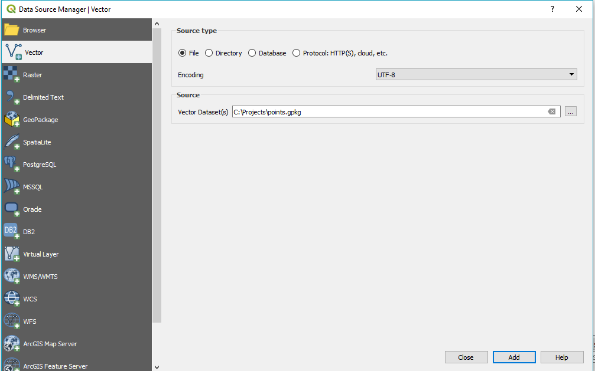
The FileGeoDataBase way
If the GeoPackage you are loading has more than one layer, than after clicking the add button, you will be prompted to select which layers you want to add, just like while importing data from an ESRI FileGeoDataBase.
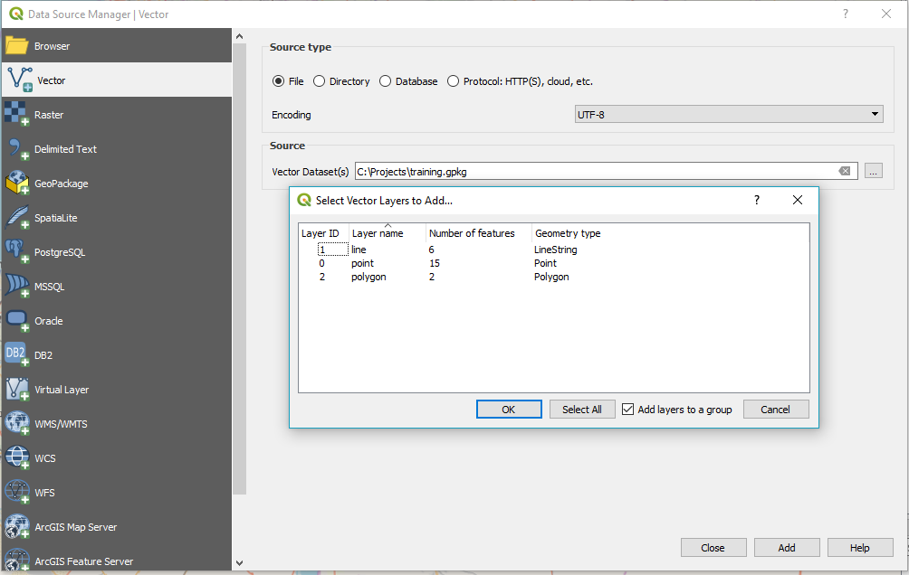
Import From a SQL DataBase
Import From a Web Service (WMS,WFS)
Importing data or tiles from a web service, any type of webservice (WMS, WFS, WCS etc.), can be quite easy when you have the service's URL.
all you have to do is open the Data Source Manager .
You can find it on the toolbar below the new project button, or open it using the Ctrl+L keyboard shortcut.
once the data source manager is opened you can select the type of service you want to add,
in this example we'll add NASA's Earth Observation (NEO) WMS.
Select the WMS/WMTS option and click on New:
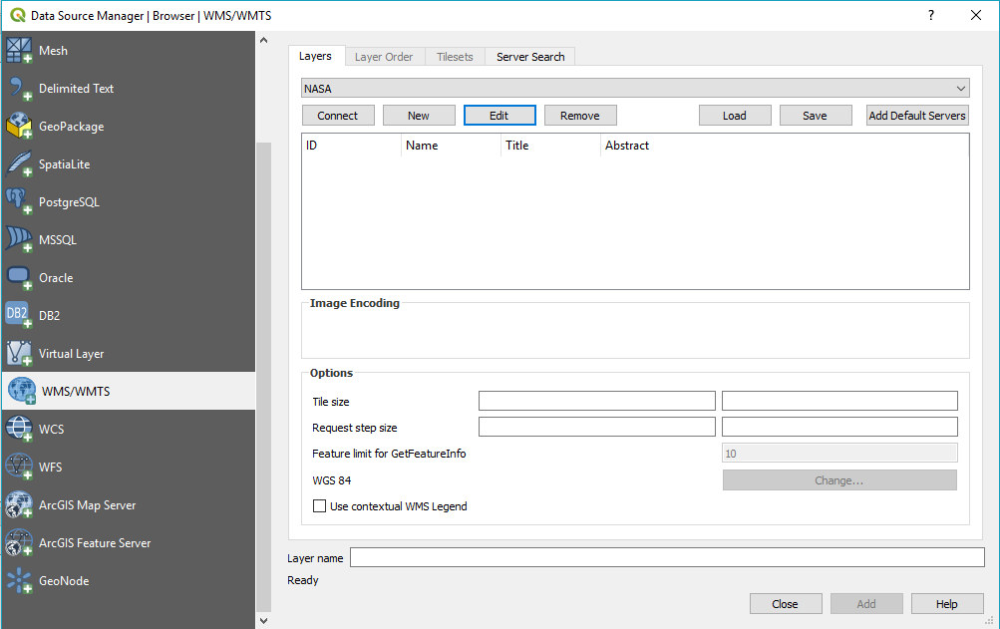
The new service window will open, you will notice the window differs very little between different types of services.
the new window should look like this:
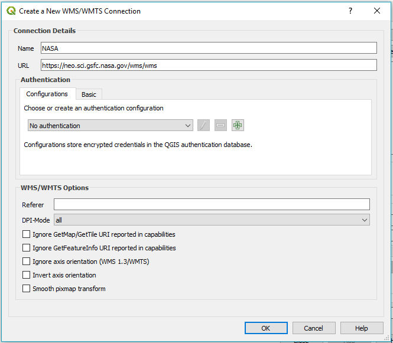
We can just call the new service NASA or NEO
and add the URL :
https://neo.sci.gsfc.nasa.gov/wms/wms
if the service requires a user name or password you can define the configuration under Authentication->Basic,
if it does not you can click on OK and back in the Data Source Manager click on connect and see all the layers our new service added:
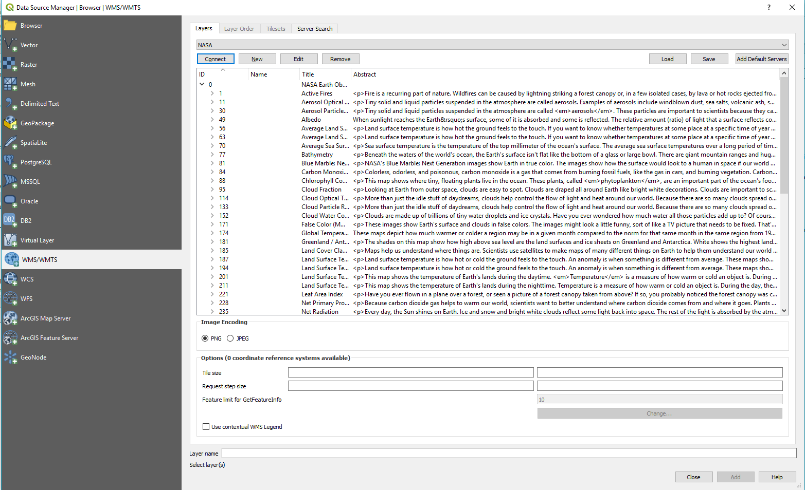
And thats it, Simple and easy to use, and now you know how to do that in Open Source.
A Not on ArcGIS Web Services
Some ArcGIS Online (AGOL) Services will only work if defined as an ArcGIS Map/Feature Server.
If your service does not work try defining it as ArcGIS Map/Feature Server instead of regular WMS/WFS.
Some Open Web Services You Can Add
You are welcome to send suggestions to be added to this list.
it's just a short list of services i've found and are worth a check.
Services marked with a star * are ArcGIS Online services.
- WMS
- NASA Earth Observations (NEO) - https://neo.sci.gsfc.nasa.gov/wms/wms
- USGS Web Map Services - https://lpdaacsvc.cr.usgs.gov/ogc/wms
- USGS 1 Meter Imagery - https://basemap.nationalmap.gov/arcgis/rest/services/USGSImageryOnly/MapServer
- *ESRI World Imagery - https://services.arcgisonline.com/ArcGIS/rest/services/World_Imagery/MapServer
- *ESRI Street Map - https://services.arcgisonline.com/arcgis/rest/services/World_Street_Map/MapServer
- *ESRI World Topo Map (the AGOL basemap) - https://services.arcgisonline.com/arcgis/rest/services/World_Topo_Map/MapServer
- *Israeli Planning Adminitration (iplan) Xplan - https://ags.iplan.gov.il/arcgis/rest/services/PlanningPublic/Xplan/MapServer
- WFS
- US Parks Boundaries - http://gstore.unm.edu/apps/rgis/datasets/7bbe8af5-029b-4adf-b06c-134f0dd57226/services/ogc/wfs?VERSION=1.0.0
- USGS Transportation - https://services.nationalmap.gov/arcgis/rest/services/WFS/structures/MapServer/
- USGS Contours - https://services.nationalmap.gov/arcgis/rest/services/WFS/Contours/MapServer/
- USGS GeoNames - https://services.nationalmap.gov/arcgis/rest/services/WFS/geonames/MapServer
- *Tel Aviv Buildings - https://gisn.tel-aviv.gov.il/arcgis/rest/services/WM/BuildingsWM/MapServer
- *Tel Aviv Urban GIS Map Layers - https://gisn.tel-aviv.gov.il/arcgis/rest/services/WM/IView2MapHebWM/MapServer
- WCS
- USGS Elevation - https://elevation.nationalmap.gov/arcgis/services/3DEPElevation/ImageServer/WCSServer
- XYZ Tiles
- Carto Positron - https://cartodb-basemaps-a.global.ssl.fastly.net/light_all/{z}/{x}/{y}.png
- ESRI Topo Map - https://server.arcgisonline.com/ArcGIS/rest/services/World_Topo_Map/MapServer/tile/{z}/{y}/{x}
- ESRI World Imagery - https://server.arcgisonline.com/ArcGIS/rest/services/World_Imagery/MapServer/tile/{z}/{y}/{x}
- Google Maps - https://mt1.google.com/vt/lyrs=r&x={x}&y={y}&z={z}
- Google Satellite - http://www.google.cn/maps/vt?lyrs=s@189&gl=cn&x={x}&y={y}&z={z}
- Google Terrain - https://mt1.google.com/vt/lyrs=t&x={x}&y={y}&z={z}
- OpenStreetMap Black & White - http://{s}.tiles.wmflabs.org/bw-mapnik/{z}/{x}/{y}.png
- Stamen Watercolor - http://c.tile.stamen.com/watercolor/{z}/{x}/{y}.jpg
- Stamen Terrain - http://a.tile.stamen.com/terrain/{z}/{x}/{y}.png
- ThunderForest Spinal Map (requires an API key) - https://tile.thunderforest.com/spinal-map/{z}/{x}/{y}.png?apikey={your API key}
- Waze World - https://worldtiles3.waze.com/tiles/{z}/{x}/{y}.png
Add New Basemaps From a Web Service (XYZ tiles)
Adding XYZ tiles to use as basemaps is a very short process.
you just have to right-click on the XYZ Tiles icon in the browser:
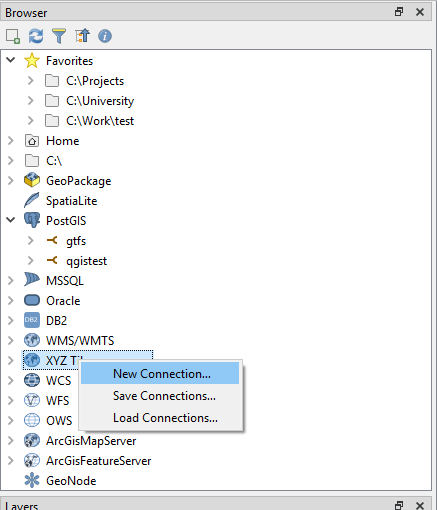
select a name for the tile you want to add, and add add the URL.
the example below adds the Positron Basemap from CartoDB:
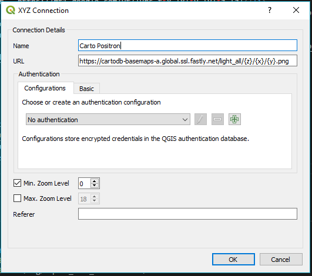
The name I set is "Carto Positron", and the URL for it is:
https://cartodb-basemaps-a.global.ssl.fastly.net/light_all/{z}/{x}/{y}.png
And thats it, Simple and easy to use, and now you know how to do that in Open Source.
for a short list of nice XYZ Tiles can be found just above this section, here.